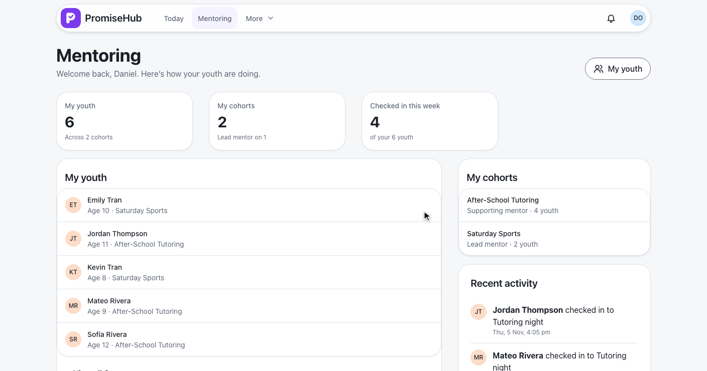
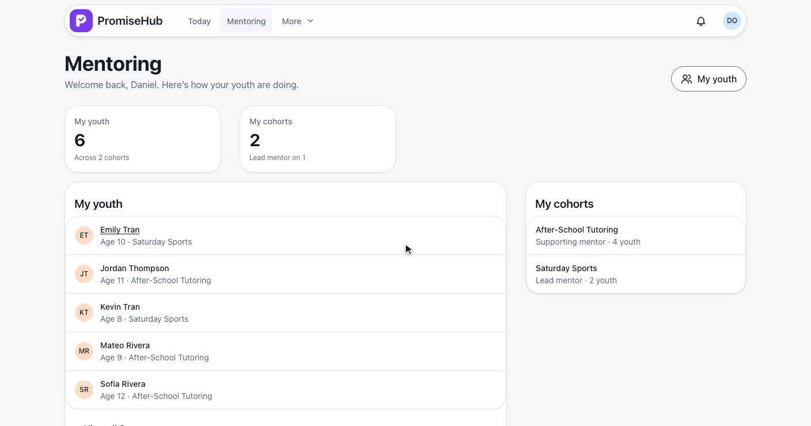
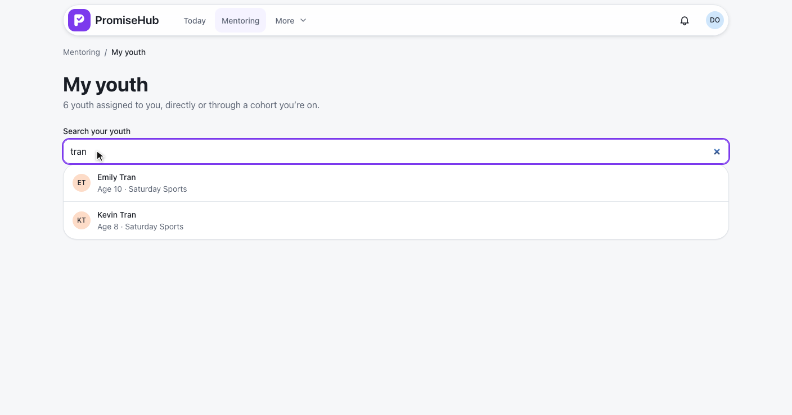
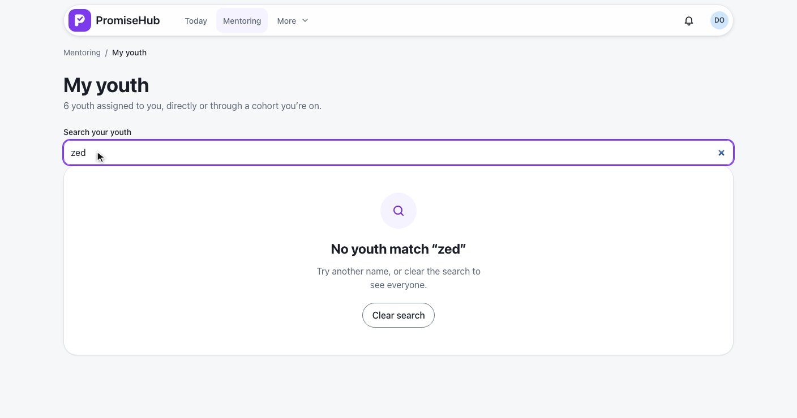
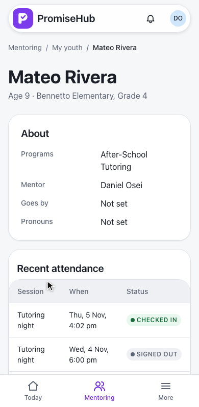
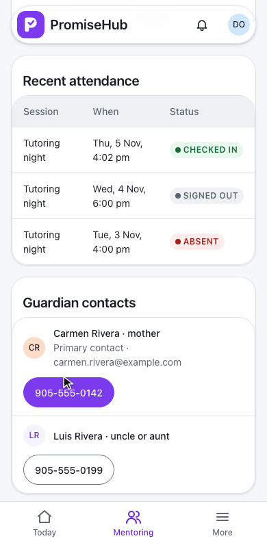
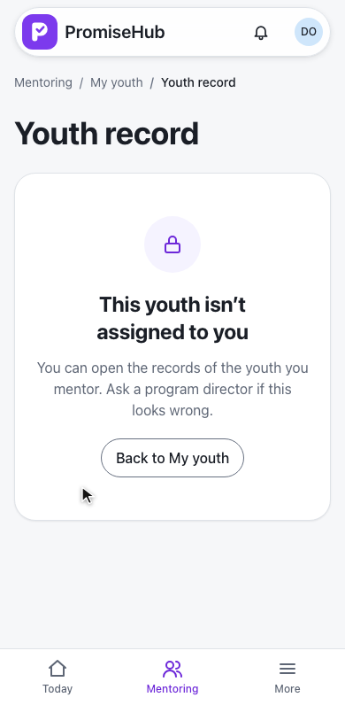
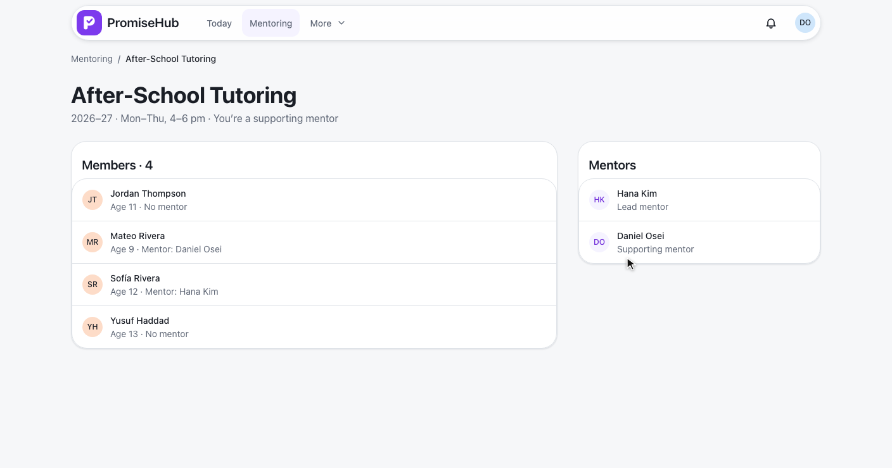
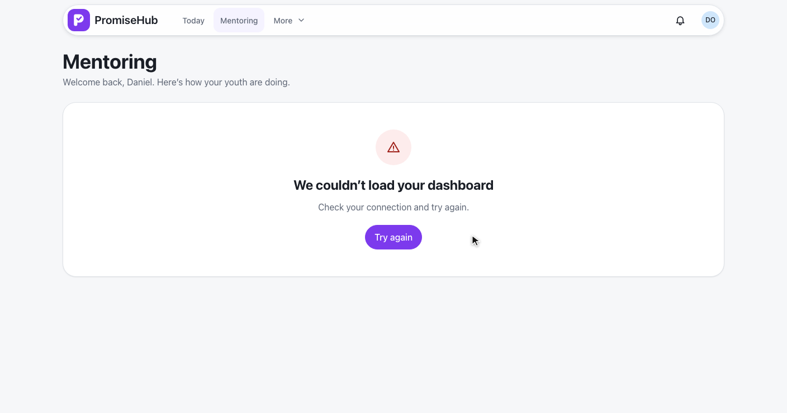

PromiseHub · Video 55
Use the mentor dashboard
A mentor's own youth and cohorts, each youth's record, and nothing that is not theirs
A mentor's own youth and cohorts, each youth's record, and nothing that is not theirs
GET /mentoring/dashboard: youth, cohorts, checked in this week, recent activity.

| Source | Counts |
|---|---|
Assigned directly (YouthMentor) | Always, even in an archived cohort |
Cohort he leads or supports (CohortMentor) | Its active roster, while not archived |
| Ended enrollment | Drops off |
| Roll Call off | checkedInThisWeek and recentActivity are null |
MentorScope serves every Mentoring read · ADR 0049



GET /mentoring/youth/{childId}, audited as Viewed on Child.


Never sent: date of birth, allergies, medication, conditions, doctor, health card, notes, pickups

| Request | Answer |
|---|---|
| A youth not in his scope | 403, audited as AccessDenied |
| Another organization's child | 404 |
| Unknown id | 404 |
GET /mentoring/cohorts/{programId}: team and roster.

Hana's empty state, Try again, and no attendance with Roll Call off.
| Caller | Answer |
|---|---|
| Mentor | Their own scope only |
| Staff, youth, volunteer | 403 |
| Removed mentor | 401 |
| Mentoring off | 404, routes go to Today |

MentorDashboardTests: youth once each, cohorts and roles, attendance on and off, archived, roles, tenancy, Mentoring off, removed mentorMentorYouthRecordTests: fields, goes-by name, nothing restricted, 403 audited, 404s, rolesMentorCohortTests: team and roster, not on the team, archived, tenancy, rolese2e/tests/mentoring specs on phone and laptop, with axe and no sideways scroll
Next: mentors grade and assess